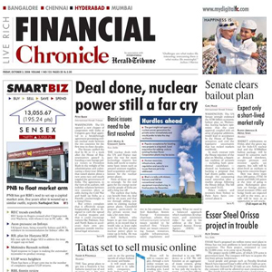
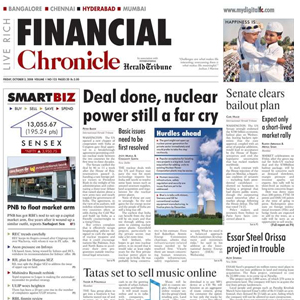

Financial News - Setting the agenda for the City
2020.10.27 09:27
Financial News
Financial News
Top Stories News View People Coronavirus Events & Awards SearchProfile
Subscribe Already a subscriber?
Sign In
Goldman Sachs’ new 170-strong team to target small M&A deals in $500m revenue push 4 min
'Around a third of the clients now transacting in our group are brand new — our bankers knocking on doors and making an introduction to Goldman Sachs,' says the Europe head of the bank's new cross-markets group
JPMorgan among banks winning fee jackpot from Ant Group’s record $34bn IPO
Goldman Sachs Investment Banking M&A An Audience With‘The day there is only one active manager left, I want to be it’ Long read
Nils Bolmstrand, the CEO of Nordea Asset Management reflects on seven months of lockdowns, Zoom calls and how the green recovery will save ESG investing
An Audience With Asset Management Investment BankingHSBC to speed up and go further on cost cuts as profits slip by 36% 4 min
HSBC has been hit by the double whammy of Covid-19 impacting profits and tensions between the US and its biggest market of China
HSBC aims to restart dividend payments
Coronavirus HSBC Investment Banking LatestNow’s the time to invest in the 2021 portfolio with these top growth stocks, Goldman Sachs says
The bank’s analysts have picked out a list of companies investing in R&D, topped by pharma group Incyte
CFA Institute cancels exams in swathe of European cities
Big investors snap up value stocks on hopes for vaccine bonanza
Citi launches London apprenticeship aimed at disadvantaged school-leavers
Industry group for Black women urges fund industry to ‘go beyond solidarity statements’
St James’s Place hit with demands from activist investor
Barclays, Citi, PJT and Deutsche set to share in £165m fee pot for William Hill takeover
Europe tightens restrictions in race against second wave of coronavirus
Warren Buffett magic fails to rub off on UK fund as it pulls London IPO
Lloyds Bank tells 65,000 staff to work from home until spring
Filter By Topic
See All Asset Management Lists ETFs Regulation Hedge Funds Trading Investment Banking Fintech Politics Private Equity Mifid II Real Estate An Audience With Webcasts Crisis Anniversary‘The day there is only one active manager left, I want to be it’
Nils Bolmstrand, the CEO of Nordea Asset Management reflects on seven months of lockdowns, Zoom calls and how the green recovery will save ESG investing
Bob Steers: ‘It makes no sense to promise the illusion of daily liquidity’
The Wall Street property guru reflects on founding his business, coronavirus ‘damage’ and what is next for real estate
An Audience With Crowdcube’s Darren Westlake: ‘We’re looking to Europe, the US and beyond’
He says venture capital firms 'will become our primary competition'
Lisa Osofsky on SFO’s dwindling caseload, UK’s ‘antiquated’ fraud laws and hiring in a pandemic
The director of the Serious Fraud Office reflects on criticism of her department and her hopes to 'make our own rain'
Ex-Goldman CFO Chavez on being gay in macho banking: ‘Math was my survival strategy’
After 20 years at Goldman, the bank’s former co-head reflects on being gay in the sector’s macho world, embracing technology and how life is far from dull in retirement
1 of 13
Symphony doubles hiring plans after 300% user surge among home-bound bankers
Government won’t rule out imposing fourth tier of restrictions, says Matt Hancock 1 min
The health secretary told the BBC Breakfast show that 'we take nothing off the table'
Coronavirus PoliticsComplaints about whistleblowing procedures to FCA see 61% jump 2 min
The increase in complaints may be due to the difficulties of finding companies' internal whistleblowing channels
Coronavirus FCABarclays CEO Jes Staley says he is not ready to hand over the reins 2 min
Jes Staley tells journalists Barclays has a ‘unique opportunity’ to help the bank recover from Covid-19 and ‘I hope I’m here as part of it’
Investment BankingBarclays sales and trading unit has best year ever as loan loss provisions ease
Fidelity snaps up Legal & General’s personal investing business
Pension funds raise concern over ties between Apollo’s co-founder and Jeffrey Epstein
West End billionaire jeweller to the stars hit by pandemic luxury goods downturn
Here’s why you need to price coronavirus restrictions into buying gold, according to UBS
Goldman claws back $174m from top execs to pay up billions in 1MDB fines
Available Online
Read the newspaper
See more online editions
On The MoveRBC Capital Markets adds new co-head of EU electronic sales and trading
Moelis hires senior dealmaker Zivotofsky to target tech companies in Israel
Trading Places: Top moves at HSBC, Lazard, Moelis and more…
NewsThese stocks won’t lose their lustre as the US slowly reopens, Goldman Sachs says
ViewTo avoid the next Woodford, regulators need to get specific on fund liquidity rules
Hedge FundsCovid and election jitters spark $13bn in hedge fund inflows
Where to live to avoid Covid-19? Ask a banker
Amanda Staveley vs Barclays: The unforgettable drama that unfolded
Amanda Staveley Barclays PCP Capital Private EquityMartin Sorrell’s son just got promoted at Goldman Sachs. These five others followed dad in finance
Goldman Sachs Jamie DimonRich finance workers to flee Britain over virus and Brexit fears
Most Read
Big investors snap up value stocks on hopes for vaccine bonanza
The 100 Most Influential Women in European Finance 2020
Hedge fund billionaire Chris Hohn: ‘Asset management industry is a joke’ on climate change
Symphony doubles hiring plans after 300% user surge among home-bound bankers
Barclays, Citi, PJT and Deutsche set to share in £165m fee pot for William Hill takeover
MANSION GLOBAL
PROPERTY OF THE DAYUpper East Side Townhouse Flooded With Natural Light
Accepted Offers Hit New Records in the U.K.
With Widespread Work-at-Home, Americans Looking to the U.K. Anew
More From News Corp news Goldman Sachs’ new 170-strong team to target small M&A deals in $500m revenue push Arts ‘A World Beneath the Sands’ Review: Pyramid Fever news Traders face ‘more scrutiny than ever’ after Morgan Stanley’s WhatsApp oustings Luxury Real Estate News No Pool? Stock Tanks Are the Cool New Alternative© 2020 FINANCIAL NEWS
The News Building
1 London Bridge Street
London, SE1 9GF
PROFILE
Subscribe
Sign In
ABOUT
Feedback
Contact Us
FAQ
Privacy Notice
Cookie Notice
Copyright Licenses
Terms & Conditions Updated 05/10/2020
Corrections
Tips
SECTIONS
News
View
People
Coronavirus
Brexit
Asset Management
Investment Banking
Trading
Fintech
Politics
Events & Awards
Lists
- Business News & Financial News | Reuters
- Financial News - Setting the agenda for the City
- Financial News | Stock Market and Forex News
- MSN
- Financial and Business News - Yahoo Finance
- Top 13 Best Financial Stock Market News Sources & Feeds 2020
- UK | Financial Times
- Finance News - CNBC
- Business & Financial News, U.S & International Breaking ...
- Stock Markets, Business News, Financials, Earnings - CNBC
- Business News & Financial News | Reuters
News, analysis and comment from the Financial Times, the world's leading global business publication
- Financial News - Setting the agenda for the City
Bloomberg – Best financial news sources to the Bloomberg Terminal but expensive. Bloomberg is one of the powerhouses of financial investing news services, catering primarily to Wall Street and Institutions, many of which pay a lot of money for the real-time feeds and the core market intelligence the Bloomberg Terminals bring.
- Financial News | Stock Market and Forex News
Business news & Financial news from Reuters.com. Reuters, the news and media division of Thomson Reuters, is the world’s largest international multimedia news provider reaching more than one ...
- MSN
Forbes.Com the #1 Most Popular Financial News Website . Forbes is a leading source for reliable business news and financial information. Read news, politics, economics, business & finance on Forbes.com
- Financial and Business News - Yahoo Finance
Latest investing news and finance headlines straight from Wall Street. Skip Navigation. Markets. ... Global Business and Financial News, Stock Quotes, and Market Data and Analysis.
- Top 13 Best Financial Stock Market News Sources & Feeds 2020
MSN
- UK | Financial Times
Breaking news, analysis and commentary on investment banking, fund management, hedge funds, pensions, private equity, fintech, financial regulation and trading.
- Finance News - CNBC
Financial News - Your source for news on stocks, money, politics, government and the world as it pertains to your finances and the economy.
- Business & Financial News, U.S & International Breaking ...
Latest financial, market & economic news and analysis from The Guardian
- Stock Markets, Business News, Financials, Earnings - CNBC
News, analysis and comment from the Financial Times, the worldʼs leading global business publication
News, analysis and comment from the Financial Times, the world's leading global business publication
Bloomberg – Best financial news sources to the Bloomberg Terminal but expensive. Bloomberg is one of the powerhouses of financial investing news services, catering primarily to Wall Street and Institutions, many of which pay a lot of money for the real-time feeds and the core market intelligence the Bloomberg Terminals bring.
Business news & Financial news from Reuters.com. Reuters, the news and media division of Thomson Reuters, is the world’s largest international multimedia news provider reaching more than one ...
Forbes.Com the #1 Most Popular Financial News Website . Forbes is a leading source for reliable business news and financial information. Read news, politics, economics, business & finance on Forbes.com
Latest investing news and finance headlines straight from Wall Street. Skip Navigation. Markets. ... Global Business and Financial News, Stock Quotes, and Market Data and Analysis.
MSN
Breaking news, analysis and commentary on investment banking, fund management, hedge funds, pensions, private equity, fintech, financial regulation and trading.
Financial News - Your source for news on stocks, money, politics, government and the world as it pertains to your finances and the economy.
Latest financial, market & economic news and analysis from The Guardian
News, analysis and comment from the Financial Times, the worldʼs leading global business publication
 
